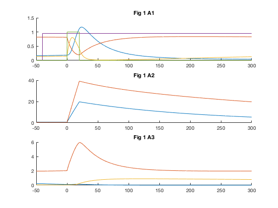

This is the readme for the code associated with the paper:
Smolen P, Baxter DA, Byrne JH (2018) Paradoxical LTP maintenance with
inhibition of protein synthesis and the proteasome suggests a novel
protein synthesis requirement for early LTP reversal. J Theor Biol
http://dx.doi.org/10.1016/j.jtbi.2018.08.026
This java script was contributed by P Smolen.
The java program runs and outputs the simulation depicted in Figure 3A, panels 1-3, of Smolen et al. 2018. To compile and run this,
For example on a MacBook Pro with Oracle Java 8:
Type the following on the command line after cd'ing to the new folder created from unzipping the file:
javac Fig3A13.java
java Fig3A13
Then the following new data files should appear in your folder
bas.txt ep2.txt np.txt ups.txt ed.txt lac.txt pp.txt stab.txt wsyn.txt ep1.txt lp.txt psi.txt stim.txt
If you run the matlab program by typing "grapher" on the matlab command prompt you should see this graph similar to figures Fig 1 A1, A2, A3 in the paper:
